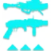

乘胜追击
击破战斗人员护盾时：
获得 +20 稳定性、+20? 操控性与 +20 填装速度，持续 10 秒。
刀剑获得 +20 防御抗性。
可自由装配历代赛季神器，每件神器围绕特定元素、武器类型与核心机制提供三档模组。
击破战斗人员护盾时：
获得 +20 稳定性、+20? 操控性与 +20 填装速度，持续 10 秒。
刀剑获得 +20 防御抗性。
击杀受电弧减益影响的敌方目标时：
获得 1 层电光充能。
连续击杀 3 名受电弧减益影响的敌方目标（相邻击杀间隔不超过 6 秒）时：
生成一个能量球（提供 7.15% 超能能量），并恢复 40 点生命值。
使用电弧武器击杀 6 [2?] 名战斗人员时：
生成一个电弧元素能量球。
电弧元素能量球：
落地后最多停留 20 秒，拾取后最多可持有 20 秒。
投掷造成最多 405 [101] 点伤害（随距离最低衰减至 90%），并在 8 米范围内施加震颤。
造成动能武器伤害或击杀推进计数器（持续 15 秒，造成伤害刷新），达到 100% 时生成一个独特的动能弹药盒：
每点伤害提供 0.0265% 进度（需造成 3770 点伤害；异域武器「翻新A499」进度减少 75%，需造成 15000 点伤害）。
拾取动能弹药盒时：
获得 +5% 特殊弹药与 +5% 威能弹药进度。
填装当前装备的动能武器，并生成（弹匣容量的 1/3）+ 1 发弹药（计入弹药拾取效果，不受弹药回收器影响）。
击破战斗人员护盾或使用终结技时：
获得 10% [2.5%] 伤害抗性（抵抗 ×1）与 100% 近战伤害加成，持续 6 秒。
超能近战伤害同样提高。
对及以上战斗人员累计造成达标的动能伤害时：
生成一个动能裂口，持续 ? 秒（受击 0.3? 秒后激活，爆发伤害取决于承受伤害量，可眩晕势不可挡勇士）。
裂口承伤与结算机制：
裂口计为弱点；对其伤害不计为对战斗人员的伤害，也不计入命中或未命中。
按 PvP 数值折算增伤：焕光 10% ｜ 武器激涌 3%／4.5%／5.5% ｜ Perk「集体行动」11%。
该机制受增伤算法影响较为复杂，绝大多数场景下会导致总伤害降低 25%–50%。少数增益例外如「伊邪那岐的重担」×4：无额外增益时总伤害提高 120%，随所挂增益递减至 +63%。
使用弓箭或狙击步枪造成精准命中时：
获得 1 层「远距填装」，持续 ? 秒，最多叠加至 ? 层。
各档数值均待测，列出 3 档不代表最大层数已确认。
眩晕勇士时：
为当前充能进度最少的技能返还 25% 技能能量。
不包括超能技能。
狙击步枪直击命中时：
获得 1 层「狙击手冥想」（威能狙击步枪直击获得 2 层），持续 7 秒。收枪后保留。
使用刀剑格挡后：
获得势不可挡射击，持续 3 秒。
这在所有情况下都不起任何作用哈哈哈哈哈哈哈哈哈哈。
地面攻击后等待 0.5 秒再次攻击时：
获得「银白利刃」，持续 5 秒（无法刷新）。
「银白利刃」：
刀剑伤害提高 15%，刀剑充能效率 +100。
连续完成 3 次轻攻击后在地面打出重攻击时：
获得「刀剑风暴连击」，持续 5 秒（刀剑击杀可刷新）。
「刀剑风暴连击」：
每 0.53 秒自动对自己周围 6 米内的战斗人员造成 103 [?] 点刀剑动能伤害并施加迷惑，持续 3 秒。
距离小于 4 米时，伤害最多提高 15%。
连续击杀 3 名受虚弱影响的敌方目标（相邻击杀间隔不超过 4 秒）时：
获得吞食，持续 5 +2.5 秒。
本应施加虚弱的命中若当场击杀敌方目标，同样计入击杀数。
虚弱在命中时检测生效，而非在使用技能瞬间快照。
击杀受虚弱影响的战斗人员时：
生成一枚追踪弹头寻找 15 米内的战斗人员。
弹头造成 87 [?] 点虚空伤害，并在 ? 米范围内施加虚弱。
使用终结技时：
获得 25% 手雷与近战技能能量。
击杀受震颤影响的战斗人员时：
对 8 米内的战斗人员施加致盲，持续 10 秒。
造成电弧近战伤害时：
施加震颤，并每 0.25 秒造成 23 点电弧持续伤害（8.75 秒内合计约 800 点）。
上述数值不含震颤伤害；计入震颤后总伤害为 1245 点。
使用机枪完成 3 次击杀（相邻击杀间隔不超过 3 秒）时：
恢复 15 点生命值，并开始生命回复。
达到 10 层时：
消耗全部层数生成一个大型能量球（提供 12.5% 超能能量）。
拾取大型能量球时：
获得 2 层武器激涌，持续 11 秒。
不会覆盖更强的武器激涌，对所有伤害类型均生效；层数不会溢出或超过 10 层。
不会提高融合手雷的烈日效果伤害。
使用上述手雷击杀敌方目标时：
在目标阵亡位置上方生成 4 枚追踪动能微型导弹，追踪 30 米内最近的敌方目标。
微型导弹命中造成 216 [?] 点动能伤害。
微型导弹行为与武器 Perk「辅助炸药」完全相同。
多次精准命中次数要求为（弹匣容量的 25%）+ 1（向下取整；弓箭为 3 次）。
触发后进入 1.5 秒冷却，冷却期间的额外命中不计。
使用缚丝摧毁缠结时：
爆炸额外造成一次 288 [?] 点伤害，在 17 米半径内衰减至 75%。
额外伤害在所有交互中均计为缠结伤害。
处于焕光状态时，造成相当于战斗人员生命值与护盾之和 10% 的武器伤害，或用武器击杀受灼烧影响的战斗人员：
目标释放 1 枚烈日弹片，造成 54 [?] 点直击伤害与最多 289 [20] 点爆炸伤害，并在 ? 米范围内施加 20+0 层灼烧。
弹片生成有 1 秒冷却时间；具有轻微追踪，但偶尔会错过生成时瞄准的战斗人员。
向盟友施加元素增益时：
获得约 15?% 职业技能能量。
对每名盟友触发后各有 ? 秒独立冷却。
对非战斗人员施加暗影减益时：
造成的烈日伤害提高 75%（与其他虚弱来源叠乘，表现为烈日伤害跳出黄色暴击数字）。
重复施加暗影减益再次触发需要 2? 秒冷却。
激活冰霜护甲、虚空覆盖护盾或织造铠甲时：
近战基础充能速率额外提高 ?% [?%]，充能近战伤害提高 50% [5%]。
超能近战与点燃伤害同样提高。
激活增幅或焕光时：
手雷基础充能速率额外提高 ?% [?%]，手雷伤害提高 25% [5%]。
模组两项增益各为抓钩近战提供 12% 伤害加成；星相「组合打击」生效期间不提高抓钩近战伤害。
冰霜护甲激活期间，护盾被战斗人员伤害击破时：
在 10 米范围内释放冰影爆发，冻结战斗人员，并为自己与范围内的盟友各提供 1 层冰霜护甲。
对动能武器无效。
拾取元素拾取物时：
与拾取物元素匹配的武器伤害提高 22% [?%]，持续 7 秒。
界面显示为武器激涌，但与普通武器激涌乘算叠加。
对受瓦解影响的战斗人员造成相当于其生命值与护盾之和 10% [100? 生命值] 的武器伤害时：
生成一条线虫（生成冷却 0.5 秒）。
线虫造成伤害时施加割裂。
在 2 名盟友 15 米范围内持续造成精准伤害时：
获得 25% 伤害抗性（抵抗 ×2），持续 10? 秒。
击杀受缚丝减益影响的战斗人员时：
触发一次悬停爆破。
仅在生成缠结时触发。
拾取与超能元素匹配的元素拾取物或投掷缠结时：
为当前充能进度最少的技能返还 25% 技能能量。
两次触发之间有 0.3 秒冷却；不会对已有至少 1 层充能的技能触发；在棱镜分支职业上装备特技闪身时不生效。
累计击杀达到所需次数后：
生成一个与超能元素匹配的元素拾取物。
生成会触发对应拾取物的全局冷却，冷却期间的击杀不计入进度；伤害类型与超能元素匹配时无额外加成。
冰霜护甲激活期间，使用冰影武器取得精准击杀时：
在目标阵亡位置触发一次冻结爆发，波及 7 米内的战斗人员。
造成线虫伤害时：
获得 1 层「集群战术」，持续 10 秒（再次造成线虫伤害刷新），最多叠加至 2 层。
处于「集群战术」×2 期间，每次线虫命中进一步使线虫伤害提高 1.03 倍（持续至增益结束）。
不会覆盖更强的武器激涌。
使用刀剑完成 3 次击杀（相邻击杀间隔不超过 3 秒）时：
获得 +3 刀剑弹药（异域武器「英勇利刃」与「故我在」改为获得 +1 弹药）。
与官方描述相反，本模组不提供任何伤害抗性。
护甲充能低于 2 层时，使用特定武器造成多次精准命中（相邻命中间隔不超过 3 秒）：
获得 1 层护甲充能。
在 3 秒内造成 2 次非同时的微型导弹伤害，或取得微型导弹击杀时：
目标释放一道无伤害衰减的动能冲击波，对 7 米范围内的战斗人员造成 120 [20] 点动能伤害并眩晕势不可挡勇士。
触发后进入 2 秒冷却时间。
拥有护甲充能时填装弓箭：
消耗 1 层护甲充能，获得 3 层「弑神箭头」（持续期间无法再次消耗护甲充能，收枪移除所有层数）。
伤害加成与所有增益效果叠乘。
15 米范围内有 3 名敌方目标且当前手持偃月或机枪时：
偃月与机枪各获得 +? 稳定性与 +30 填装速度（条件脱离后再持续 5 秒）。
偃月射弹、偃月近战或机枪击杀可恢复 55 点生命值。
击杀生命值恢复效果在条件脱离后不会延续。
缠结造成伤害时：
施加割裂，持续 10 +5 秒。
拾取缠结时：
缠结生成冷却减少 4 秒。
可由异域武器「摩伊拉」的线织尖刺击中缠结触发，也可由拾取异域武器「鲁扎库之役」密集巢穴生成的缠结触发。
融合步枪或线性融合步枪命中时：
施加专属的可叠加虚弱，按层数提高目标受到的融合与线性融合步枪伤害：
5% ｜ 10.25% ｜ 15.8% ｜ 21.6% ｜ 27.6%
30% 虚弱会覆盖本效果；异域武器「神圣裁决」的弱点笼会将其压低至 15%。
击杀受电弧减益影响的战斗人员时：
获得 1 层电光充能。
与加密数据磁盘版本不同，本版本不生成能量球，也不恢复生命值。
累计施加 4 次不稳定（相邻间隔不超过 5 秒）时：
接下来 10 秒内的下一次虚空伤害在 7 米内释放虚弱爆发，波及敌方目标。
对尚未受虚弱影响的敌方目标施加虚弱时：
获得 +25 虚空覆盖护盾生命值，持续 10 +5 秒。
每个虚弱来源仅触发一次（例如烟雾弹不会重复触发）；使用法夫纳或牵引器火炮时不会获得虚空覆盖护盾。
使用与超能元素匹配的武器击杀处于疲惫或割裂状态的战斗人员时：
额外获得 2?% 超能能量。
使用虚空武器造成多次精准命中或取得 3 次击杀（各自相邻间隔不超过 3 秒）时：
获得不稳定弹药，持续 10 [6] 秒。
多次精准命中次数要求为（弹匣容量的 25%）+ 1（向下取整；弓箭为 2 次）。
触发不稳定爆炸时：
获得 10% 职业技能能量。
叠至 10 层电光充能时：
获得增幅，持续 15 秒。
不会提高对守护者的伤害。
造成 8 次机枪伤害或 2 次火箭发射器伤害（相邻伤害间隔不超过 7 秒）时：
获得 25% [5%] 伤害抗性（抵抗 ×2），持续 15.5 秒；手雷与近战基础充能速率额外提高 85%，持续 10 秒。
威能军械效果激活期间：
击杀及以上战斗人员时，使 10 米内的战斗人员迷失方向。
拾取能量球或投掷缠结时：
获得瓦解弹药，持续 14 [?] 秒。
对受瓦解影响的战斗人员造成相当于其生命值与护盾之和 10% [100? 生命值] 的武器伤害时：
生成一条线虫（生成冷却 0.5 秒）。
线虫造成伤害时施加割裂。
眩晕勇士时：
获得 10 层电光充能。
「闪电过载」机制强化：
溅射伤害部分会施加震颤。
触发时恢复约 55 点生命值并开始生命回复（不会直接恢复护盾充能）。
使用电弧伤害击杀处于疲惫或割裂状态的战斗人员时：
触发一次致盲爆发，致盲 5? 米内的战斗人员。
触发有 6? 秒冷却时间。
在 3 秒内完成 2 次偃月近战击杀时：
为特殊弹药偃月补充 +2 备用弹药。
使用偃月护盾格挡伤害时：
偃月近战伤害提高 85% [?%]，持续 6 秒。
盟友射击该护盾同样可以触发。
使用虚空武器击杀受虚弱影响的战斗人员时：
对 ? 米内的战斗人员施加不稳定。
击杀及以上战斗人员 [?] 与 [?] 时，作用范围进一步扩大至 ? 米。
使用动能武器或与超能元素匹配的武器取得 3 次击杀（相邻击杀间隔不超过 3 秒）时：
生成一个与所装备超能元素匹配的元素拾取物。
拾取元素拾取物时：
获得 5% [1%] 对应元素的超能能量。
两次额外充能之间有 2 秒冷却时间。
对受元素匹配减益影响的战斗人员造成 3 次追踪步枪命中时：
追踪步枪伤害提高，持续 4 秒。
施放超能时处于低生命值，或拥有元素匹配增益时：
超能技能伤害提高 15%（一次性超能持续 8 秒，持续型超能持续至技能结束）。
计数器达到 100% 时：
火箭发射器获得 +1 备弹（精密或高冲击框架，或带有 Perk「双脚架」时改为 +2 弹药）。
同时获得 +? 填装速度与 0.?× 填装持续时间倍率，持续 10 秒。
不受弹药回收器影响。
拾取 5–6 个特殊弹药盒时：
生成 8% 威能弹药（向上取整）。
拾取计数器在死亡时重置；不受弹药回收器影响；在熔炉竞技场中无效。
对受割裂影响的敌方目标造成 6 次武器伤害时：
施加瓦解。
击杀受割裂影响的敌方目标时：
在目标阵亡位置每 2 秒释放一次治疗脉冲（共 3 次），每次恢复 15 点生命值，并为自己与 10? 米内的盟友提供织造铠甲，持续 10 秒。
造成多次非同时冰影武器伤害（相邻间隔不超过 3 秒）时：
获得 1 层冰霜护甲（两次触发间隔冷却 0.45 秒，收枪重置）。
所需命中次数：弓箭 3 次 ｜ 单发榴弹发射器或刀剑 2 次 ｜ 其余武器为（弹匣容量的 35%，向下取整）+ 2。
对受减速影响的敌方目标造成多次冰影武器伤害（相邻间隔不超过 3 秒）时：
在目标上方生成一个冰影碎片。
所需命中次数：弓箭 3 次 ｜ 单发榴弹发射器或刀剑 2 次 ｜ 其余武器为（弹匣容量的 25%，向下取整）+ 2。
无需手持冰影武器，命中次数按当前手持武器的弹匣计算。
冰霜护甲激活期间，护盾被战斗人员伤害击破时：
在 10 米范围内释放冰影爆发，冻结战斗人员，并为自己与范围内的盟友各提供 1 层冰霜护甲。
受冻结影响的战斗人员会对其周围 4? 米内尚未受到冰影减益影响的战斗人员施加 ? 层减速。
拾取冰影碎片时推进「晶体转换器」计数器。
施放职业技能时：
下一次冰影武器击杀生成一个冰影碎片。
击碎冰影水晶时：
呈 * 形释放 5 枚追踪冰刺，每枚造成 46 点伤害并施加 ? 层 [10 层]减速，持续 ? 秒。
在战斗人员身上击碎额外造成 12.5% [?%] 伤害；击碎水晶额外造成 25% [?%] 伤害。
冰刺均匀散开，其中一枚固定飞向最近的战斗人员。
拾取虚空裂口时：
接下来 10 秒内的下一次虚空伤害在 5? 米内释放虚弱爆发，对敌方目标施加虚弱。
终结及以上战斗人员时：
恢复 100 点生命值并开始生命回复，获得 25% 伤害抗性（抵抗 ×2），持续 11 秒。
终结战斗人员时：
触发一道波形朝终结方向推进（追踪战斗人员，最远波及 20 米），造成 180 点与超能元素匹配的伤害（不受光等差影响）。
对受冰影减益影响的敌方目标：
电弧与虚空技能伤害提高 5%。
连续击杀 3 名受虚弱影响的敌方目标（相邻击杀间隔不超过 4 秒）时：
获得吞食，持续 5 +2.5 秒，并生成一个虚空裂口。
本应施加虚弱的命中若当场击杀敌方目标，同样计入击杀数。
使用榴弹发射器对或勇士造成伤害，或击破战斗人员护盾时：
施加虚弱，持续 20 秒，同时填装已收起的武器。
施加虚弱与填装各有 10 秒独立冷却；虚弱可由其他来源刷新，但不能被本模组本身刷新。
对受电弧减益影响的战斗人员造成 2 次精准命中（间隔 1 秒内），或击杀 3 名受电弧减益的战斗人员（间隔 3 秒内）时：
生成一个离子轨迹（生成冷却 4 秒）。
拾取离子轨迹时：
获得 1 层护甲充能。
拥有护甲充能时，在 2 秒内对尚未致盲的战斗人员造成 2 次电弧武器精准命中：
消耗 1 层护甲充能，触发致盲爆发，对 7 米范围内的战斗人员施加致盲，持续约 8.5 秒。
使用榴弹发射器命中目标达标时（威能命中 3 次 ｜ 主武器或特殊单次直接命中 ｜ 累计 5 次持续伤害，每 0.5 秒最多计入一次）：
在敌方目标脚下触发无衰减冲击波，在 7 米内造成踉跄并眩晕势不可挡勇士。
威能榴弹冲击波造成 227 × 2（合计 454）点动能伤害；主武器与特殊榴弹造成 150 × 2（合计 300）点伤害。
触发后 1 秒内的伤害不计入下次触发计数。
造成榴弹发射器伤害时：
获得 1 层「快速冲击」，持续 5 秒，最多叠加至 5 层。
15 米范围内有 3 名敌方目标时：
获得 +35? 操控性与 +? 充能效率（脱离范围后效果延续 1.5 秒）；击杀 3 名敌方目标获得 1 层护甲充能。
首次击破战斗人员护盾或超能激活中的敌方护盾，或终结尚未触发过该效果的战斗人员时：
生成一个能量球（提供 7.15% 超能能量）。
拾取能量球、元素拾取物或摧毁缠结时：
恢复 40 点生命值。
对受致盲影响的战斗人员造成的电弧伤害提高 15% [7.5%]。
该伤害加成与所有增益效果叠乘。
使用武器完成 3 次击杀（相邻击杀间隔不超过 3 秒）时：
获得 +50? 敏捷，持续 7 秒（再次触发可刷新）。
计数器达到 100% 时：
生成一个虚空裂口。
拾取虚空裂口时：
获得 +? 操控性与 +? 填装速度，持续 ? 秒，并补满霰弹枪与榴弹发射器的弹匣。
拾取虚空裂口时：
接下来 10 秒内的下一次虚空武器伤害开启一个虚空门户。
虚空门户：
向约 10 米内的战斗人员释放 8 枚追踪虚空球，每枚在约 3? 米内造成最高 334 [?] 点溅射伤害。
对每枚造成 540 点伤害，对及以上每枚造成 180 点伤害。
使用动能武器或与超能元素匹配的武器连续完成 3 次击杀（相邻击杀间隔不超过 3 秒）时：
生成一个与所装备超能元素匹配的元素拾取物。
与加密数据磁盘版本的同名模组不同，本版本不提供超能能量。
眩晕勇士时：
为当前充能进度最少的技能返还 25% 技能能量。
不包括超能技能。
施放超能时：
15 米内超能元素与自己不同的盟友获得 20% [10%] 伤害加成，持续 10 [5] 秒。
伤害加成不可刷新，且不与「焕光」等强化增益叠加。
常驻对战斗人员获得 5%? 伤害抗性。
使用刀剑连续击杀 3 名战斗人员（相邻击杀间隔不超过 5 秒）时：
获得 +3 刀剑备弹（异域武器「英勇利刃」与「故我在」改为获得 +2 弹药）。
造成刀剑伤害时：
消耗 1 层护甲充能，获得「银白利刃」，持续 5 秒（持续期间不消耗额外护甲充能）。
「银白利刃」：
刀剑伤害提高 15%，刀剑充能效率 +100。
该伤害加成与其他增益效果叠乘。
对受冰影减益战斗人员取得冰影击杀时：
在 6 米内触发一次减速爆发。
减速爆发：
对战斗人员施加 20 层减速，持续 2?（碎片「耐久之吟」+?）秒。
为自己与盟友提供 ? 层冰霜护甲。
强化节点：没有效果。
装备虚空或棱镜分支职业时：
击杀受虚弱影响的战斗人员，获得 15 点生命值的覆盖护盾。
异域武器「神圣裁决」的虚弱效果不受影响。
击破战斗人员护盾时：
获得 +20 稳定性、+20? 操控性与 +20 填装速度，持续 10 秒。
刀剑获得 +20 防御抗性。
装备烈日或棱镜分支职业时：
拾取能量球额外赋予焕光，持续 10 +5 秒。
激活冰霜护甲、虚空覆盖护盾或织造铠甲时：
近战基础充能速率额外提高 ?% [?%]，充能近战伤害提高 50% [5%]。
超能近战与点燃伤害同样提高。
激活增幅或焕光时：
手雷基础充能速率额外提高 ?% [?%]，手雷伤害提高 25% [5%]。
模组两项增益各为抓钩近战提供 12% 伤害加成；星相「组合打击」生效期间不提高抓钩近战伤害。
使用缚丝摧毁缠结时：
爆炸额外造成一次 288 [?] 点伤害，在 17 米半径内衰减至 75%。
额外伤害在所有交互中均计为缠结伤害。
对勇士造成电弧技能伤害时：
对该勇士施加震颤。
超凡激活期间：
手雷与近战伤害提高 10%。
超凡结束后：
每次武器击杀返还 4.2% 光能与暗影能量，最多累计至 50%（需要 12 次击杀）。
使用烈日狙击步枪造成精准命中时：
施加 30+15 层灼烧。
不受武器框架与弹药类型影响。
点燃额外触发一次爆燃伤害：
在 12? 米范围内造成 171 [30] 点烈日伤害并视为点燃效果（PvE 无伤害衰减，[PvP 有伤害衰减]）。
装备碎片「烧焦余烬」时：
爆燃额外施加 40+20 层灼烧。
可受点燃伤害加成影响（例如异域护甲「黎明副歌」）；同时装备碎片「烧焦余烬」与「骨灰余烬」时可连锁触发点燃。
狙击步枪直击命中时：
获得 1 层「狙击手冥想」（威能狙击步枪直击获得 2 层），持续 7 秒。收枪后保留。
对同一名战斗人员造成 10 次自动步枪命中（相邻命中间隔不超过 1.5 秒）时：
获得 25% 伤害抗性（抵抗 ×2），持续 6 秒（可刷新，收枪后保留）。
支援型自动步枪可通过治疗受伤的盟友触发本效果。
使用自动步枪击杀战斗人员推进计数器（收枪后保留进度）：
普通击杀提供 50% 进度；周围 15 米内有 3 名战斗人员或已拥有 5 层增益时击杀提供 100% 进度。
计数器达到 100% 时：
获得 1 层「瞄准自动填装器」，持续 15 秒（最多叠加至 5 层，可刷新）。
伤害加成与其他增益叠乘；切换至非自动步枪武器时移除。
装备电弧或棱镜分支职业且处于增幅状态时：
电弧击杀触发一次闪电爆发，在 8 米半径内造成最高 126 [?] 点电弧伤害并施加震颤。
两次触发之间有 5 秒冷却时间。
多次精准命中次数要求为（弹匣容量的 25%）+ 1（向下取整；弓箭为 3 次）。
触发后进入 1.5 秒冷却，冷却期间的额外命中不计。
拾取能量球或投掷缠结时：
获得瓦解弹药，持续 14 [?] 秒。
对受瓦解影响的战斗人员造成相当于其生命值与护盾之和 10% [100? 生命值] 的武器伤害时：
生成一条线虫（生成冷却 0.5 秒）。
线虫造成伤害时施加割裂。
处于焕光状态时：
对受缚丝或冰影减益影响的非战斗人员，武器伤害提高 5%。
击杀受冻结影响的战斗人员时：
在目标阵亡位置生成 1 个冰影水晶（级目标生成 2 个）。
击碎冰影水晶时：
呈 * 形释放 5 枚追踪冰刺，每枚造成 46 点伤害并施加 ? 层 [10 层]减速，持续 ? 秒。
在战斗人员身上击碎额外造成 12.5% [?%] 伤害；击碎水晶额外造成 25% [?%] 伤害。
冰刺均匀散开，其中一枚固定飞向最近的战斗人员。
施放烈日超能时：
自己与 15 米内的盟友获得焕光。
按范围内盟友人数（含自己，共 1 至 6 人）提供超能伤害加成：
6% ｜ ?% ｜ ?% ｜ ?% ｜ ?% ｜ 15?%
超能「光焰之井」的加成仅对自身维持 5 秒。
眩晕勇士时：
对该勇士施加点燃。
处于焕光状态时：
使用烈日武器取得精准击杀时，触发点燃。
击破战斗人员护盾或使用终结技时：
获得 10% [2.5%] 伤害抗性（抵抗 ×1）与 100% 近战伤害加成，持续 6 秒。
超能近战伤害同样提高。
火箭发射器对勇士造成的伤害提高 33%。
单人游玩时：
取得精准击杀获得 1 层伤害增益（层数无上限 ∞，阵亡时全部清除）。
每层提供 1.2% 对战斗人员的武器伤害加成，叠至 25 层时达到上限 30%（后续层数不再增加伤害）。
该伤害加成与所有增益效果叠乘。
超能能量高于 60% 但尚未充满时：
技能击杀生成 3 个能量球，每个提供 7.15% 超能能量（生成冷却 30 秒）。
只要超能能量高于 60%，漫游型超能持续期间同样可以触发。
发射火箭发射器时：
消耗 1 层护甲充能，获得「弑神弹头」，持续 4.5 秒（持续期间不消耗额外护甲充能）。
「弑神弹头」：
伤害提高 15%（可叠乘），获得 +? 填装速度与 0.?× 填装持续时间倍率。
处于焕光状态时：
烈日武器对尚无灼烧层数的战斗人员施加 30+15 层灼烧。
首次触发的烈日效果不受武器或技能伤害加成影响；在超能「光焰之井」内无效。
对受冰影减益战斗人员取得冰影击杀时：
在 6 米内触发一次减速爆发。
减速爆发：
对战斗人员施加 20 层减速，持续 2?（碎片「耐久之吟」+?）秒。
为自己与盟友提供 ? 层冰霜护甲。
强化节点：没有效果。
冰霜护甲激活期间，使用冰影武器取得精准击杀时：
在目标阵亡位置触发一次冻结爆发，波及 7 米内的战斗人员。

在 ? 秒内使用榴弹发射器或火箭发射器完成 2 次击杀时：
获得 1 层护甲充能。
计数器达到 100% 时：
火箭发射器获得 +1 备弹（精密或高冲击框架，或带有 Perk「双脚架」时改为 +2 弹药）。
同时获得 +? 填装速度与 0.?× 填装持续时间倍率，持续 10 秒。
不受弹药回收器影响。
对受割裂影响的敌方目标造成 6 次武器伤害时：
施加瓦解。
击杀受割裂影响的敌方目标时：
在目标阵亡位置每 2 秒释放一次治疗脉冲（共 3 次），每次恢复 15 点生命值，并为自己与 10? 米内的盟友提供织造铠甲，持续 10 秒。
瓦解织线造成的伤害提高 15%。
装备缚丝或棱镜分支职业，获得织造铠甲时：
赋予武器瓦解弹药，持续 8 秒。
拾取能量球或虚空裂口时：
赋予虚空武器不稳定弹药，持续 9 [?] 秒。
使用偃月对战斗人员造成伤害时：
施加压制，持续 10 秒。
偃月近战消耗 10% 偃月护盾能量施加压制（目标已被压制时不消耗能量）。
装备电弧或棱镜分支职业且处于增幅状态时：
电弧击杀触发一次闪电爆发，在 8 米半径内造成最高 126 [?] 点电弧伤害并施加震颤。
两次触发之间有 5 秒冷却时间。
装备虚空或棱镜分支职业时，击杀受虚空减益影响的战斗人员：
生成一个虚空裂口。
拾取虚空裂口时：
获得 +45 虚空覆盖护盾生命值，持续 10 +5 秒。
拾取虚空裂口时：
接下来 10 秒内的下一次虚空伤害在 5? 米内释放虚弱爆发，对敌方目标施加虚弱，持续 8 秒。
装备电弧或棱镜分支职业时：
增幅持续时间延长至 20 秒。
眩晕勇士时：
获得 1 层护甲充能。
仅能赋予一种增益，优先级按上述顺序排列。
处于重伤或增幅状态时：
电弧超能伤害提高 30%。
仅加成超能施放动画期间造成的伤害，因此「雷霆冲击」与「风起云涌」实际吃到的加成偏低。
使用虚空武器击杀 3? 次及以上战斗人员时：
为自己与 ? 米内的盟友提供 50?% 威能弹药箱寻找进度。
施放电弧手雷技能时：
5 秒内手雷基础充能速率额外提高 130%。
电弧击杀为本效果延长 +3? 秒，最多累计至 20 秒。
对同一名战斗人员造成 10 次自动步枪命中（相邻命中间隔不超过 1.5 秒）时：
获得 25% 伤害抗性（抵抗 ×2），持续 6 秒（可刷新，收枪后保留）。
支援型自动步枪可通过治疗盟友触发本效果。
虚空手雷技能伤害施加干扰。
手持偃月时：
对 ? 米内的战斗人员获得 50% 伤害抗性。
首次击破战斗人员护盾，或终结尚未触发过该效果的战斗人员时：
生成一个能量球（提供 7.15% 超能能量）。
对每名战斗人员仅生效一次。
使用自动步枪击杀战斗人员推进计数器（收枪后保留进度）：
普通击杀提供 50% 进度；周围 15 米内有 3 名战斗人员或已拥有 5 层增益时击杀提供 100% 进度。
计数器达到 100% 时：
获得 1 层「瞄准自动填装器」，持续 15 秒（最多叠加至 5 层，可刷新）。
伤害加成与其他增益叠乘；切换至非自动步枪武器时移除。
持有至少 1 层虚空技能充能时，使用虚空武器取得击杀：
按当前手雷、近战、职业技能与超能技能的充能总层数，获得等层数的武器激涌，持续 11 秒（最多获得 4 层武器激涌，例如 4 种技能各 1 层，或 2 手雷 + 2 近战）。
仅在当前激涌层数不超过虚空技能充能数量时才能刷新持续时间；在棱镜分支职业上表现正常。